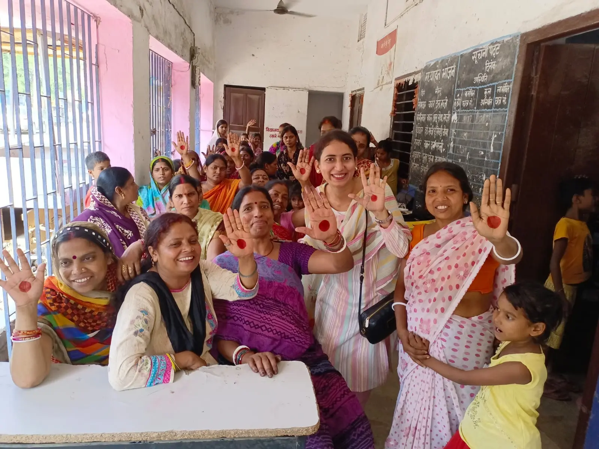

Freedom
Room to ask and try.
Children can question, choose, experiment and make mistakes without being reduced to marks or obedience.
About Diksha · Bihar · Since 2010
We stay long enough to know the children, their families and the places they come from. That is how a learning centre becomes a community.
Children arrive with ability, imagination and their own view of the world. Our work is to make sure circumstance does not shrink what they can try.

01 · Where we began
KHEL Patna began in 2010 as an after-school learning centre.
The children who came did not need to be told they were capable. They needed books, teachers, time, attention and room to try things that were not always available at school or at home.
So KHEL made space for schoolwork and for theatre, art, football, technology, conversation and shared decisions. Children could ask questions, make mistakes, take responsibility and discover what they enjoyed doing well.
The programmes have changed over the years. The commitment has not: stay for the long term, know each learner and keep widening the opportunities around them.
Nine years that shaped Diksha
From 2010 until 2019, Badi Maa volunteered full time with Diksha.
She was present at the centre with children and educators through the years when Diksha was finding its feet. Her contribution was not ceremonial or occasional. She gave the organisation her time, care, discipline and steadiness.
Children remember her simplicity, warmth and joy. She helped make the centre feel like a place where people were known and cared for—not only taught.
Her nine years help explain what Diksha means by relationship: keep showing up, take every child seriously and let care be visible in the way the work is done.
02 · How the work grew
We do not measure growth only by opening another centre. Growth also means children taking leadership, families trusting the work and former students returning with responsibility.
The first long-term learning space and the home of Diksha’s practice.
The KHEL approach takes root in another community.
A local learning centre connected with children, families and schools.
Students become youth leaders; some return as educators and mentors.
03 · What holds us together
Joy invites children to participate. Participation builds confidence. Confidence makes room for responsibility and leadership.
Freedom
Children can question, choose, experiment and make mistakes without being reduced to marks or obedience.
Joy
Theatre, sport, art, stories and friendship belong inside a serious education—not at its edges.
Democracy
Through Bal Sansad and open-house meetings, children speak, decide and take responsibility for their centres.
The three Rs

More than an organisation
Children, alumni, educators, families, volunteers, board members and partners all carry part of the work.
Diksha’s role is not to act as the hero in someone else’s story. It is to build a platform from which children and young people can learn, create, represent their teams and lead.
“I belong. I can lead. I matter.”
Continue exploring
Explore KHEL, current programmes and Diksha’s project archive.